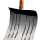
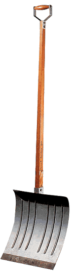

|
|
 | Accueil |

« En 1913 j'eus l'heureuse idée de fixer une roue de bicyclette sur un tabouret de cuisine et de la regarder tourner. [...]À New-York en 1915 j'achetai dans une quincaillerie une pelle à neige sur laquelle j'écrivis: "En prévision du bras cassé" (In advance of the broken arm) C'est vers cette époque que le mot readymade me vint à l'esprit pour désigner cette forme de manifestation. Il est un point que je veux établir très clairement, c'est que le choix de ces readymades ne me fut jamais dicté par quelque délectation esthétique. Ce choix était fondé sur une réaction d'indifférence visuelle, assortie au même moment à une absence totale de bon ou mauvais goût... en fait une anesthésie complète. Une caractéristique importante: la courte phrase qu'à l'occasion j'inscrivais